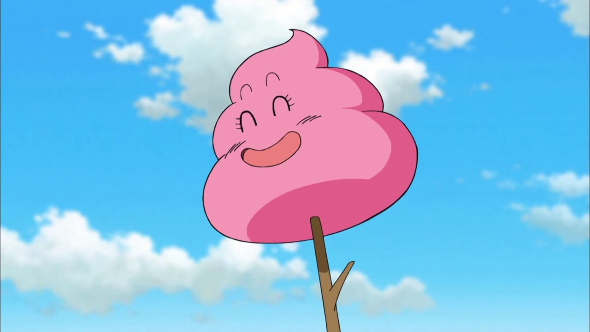

Bad ending

Levantaste la piedra y debajo de ella de repente sale una popó de color rosa saltarina sonriente... Aparece Arale de la nada y juega con la popó con una ramita de por allí.
Arale no se irá hasta terminar de jugar con la popó, contigo y con lo que se encuentre, es decir estarás hasta el final de los tiempos sin poder escapar del poder del guión. Fin del trayecto.
Volver